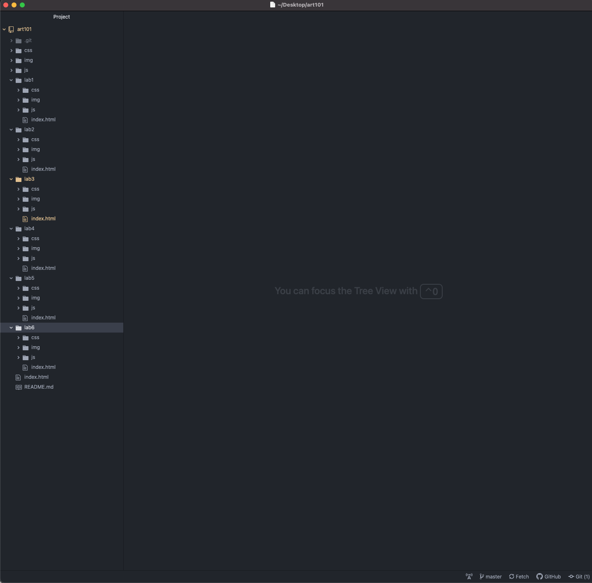
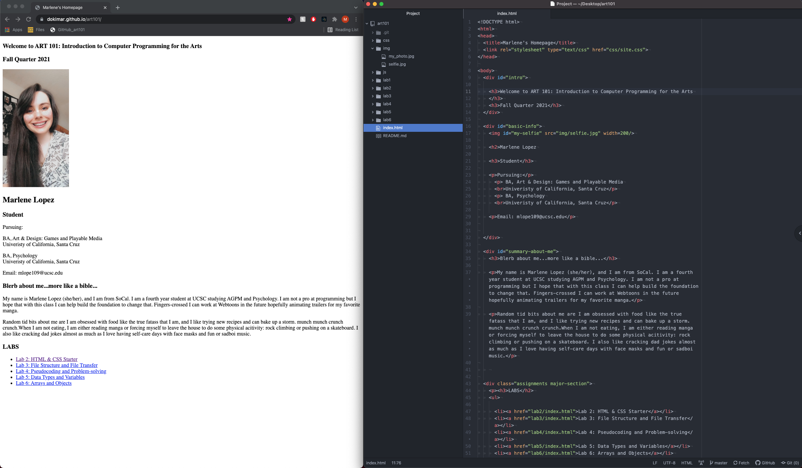

The idea of this lab was to work with a partner to further create a local file structure on my computer, add index.html files, and upload to the server.
The instructions to complete the lab were so thorough and easy to understand, I had no trouble creating the file structure once I got started. However, I did have some difficulty adding my selfie image to the "img" file because I had not considered dragging-and-dropping my image to the browser GitHub repository which once I did made my life a lot easier. Pulling and committing was also something that once I got a hang of became crucial to my progress.
Pictured below is a screenshot of the files structure I created under my art101 folder:
And pictured below here is a screenshot of the index.html file I created that introduces me, my interests, and a bulleted list of links to each of my labs:
